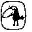

E. M. Cioran
Tarih ve Ütopya
Fransızca yazan Rumen deneme yazarı ve ahlakçısı Emil Michel Cioran 8 Nisan 1911’de Raslnari’de (Romanya) doğdu. On yedi yaşında Bükreş Üniversitesi Felsefe Bölümüne girdi. Lisansını Bergson üzerine hazırladığı bir tezle aldı.1934’te Bükreş’te yayımlanan ilk kitabı Sur les cimes du désespoir (Ümitsizliğin Doruklarında), kendisinin de kabul ettiği gibi, sonradan Rumence ve Fransızca yazdığı her şeyin özünü barındırır. Hayatın trajik boyutundan habersiz olmakla suçladığı Bergsonculuk’tan o dönemde koptu. 1937’de, dini bir krizin ürünü olan ve tartışmalar yaratan kitabı Des larmes et des saints (Gözyaşları ve Azizler Üzerine) yayımlandı. Aynı yıl, Bükreş Fransız Enstitüsünden bir burs alarak Paris’e gitti ve oraya yerleşti. 1995 yılında Alzheimer hastalığından öldü.
1947’de Fransızca yazdığı ve Fransa’da yayımlanan ilk kitabı olan Précis de décomposition’u (1949, Çürümenin Kitabı) şu eserleri izledi (başlıcaları): Syllogismes de l’amerlume (1952, Burukluk), La Tentation d’exister (1956, Varolma Eğilimi), Histoire et utopie (1960, Tarih ve Ütopya), La Chute dans le temps (1965, Zamanda Düşüş), Del l’inconvénient d’étre né (1973, Doğmuş Olmanın Sakıncası). Aveux et Anathemes (1981, İtiraflar ve Aforozlar).
